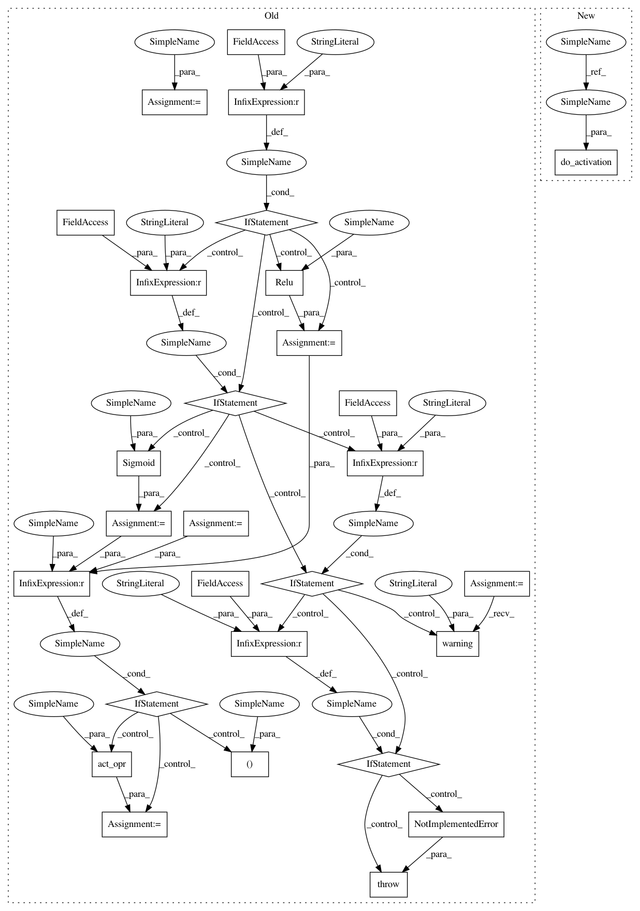

f2cab451c56eac7e9b3daed0ac25c40db18f51f8,src/graph_transpiler/webdnn/frontend/keras.py,,_convert_dense,#Any#Any#,271
Before Change
bias_opr = AxiswiseBias(None, Axis.C)
y, = bias_opr(y, bias)
act_opr: Operator = None
activation_type: str = operator.specific_config["activation"]
if activation_type == "relu":
act_opr = Relu(None)
elif activation_type == "sigmoid":
act_opr = Sigmoid(None)
elif activation_type == "softmax":
console.warning("[KerasConverter] omitting softmax activation")
elif activation_type == "linear":
pass
else:
raise NotImplementedError(f"Unknown activation {activation_type}")
if act_opr is not None:
y, = act_opr(y)
operator.outputs = [y]
@KerasConverter.register_handler("Dropout")
After Change
bias_opr = AxiswiseBias(None, Axis.C)
y, = bias_opr(y, bias)
y = do_activation(operator.specific_config["activation"], y)
operator.outputs = [y]
In pattern: SUPERPATTERN
Frequency: 3
Non-data size: 28
Instances
Project Name: mil-tokyo/webdnn
Commit Name: f2cab451c56eac7e9b3daed0ac25c40db18f51f8
Time: 2017-06-24
Author: hidaka@mi.t.u-tokyo.ac.jp
File Name: src/graph_transpiler/webdnn/frontend/keras.py
Class Name:
Method Name: _convert_dense
Project Name: mil-tokyo/webdnn
Commit Name: f2cab451c56eac7e9b3daed0ac25c40db18f51f8
Time: 2017-06-24
Author: hidaka@mi.t.u-tokyo.ac.jp
File Name: src/graph_transpiler/webdnn/frontend/keras.py
Class Name:
Method Name: _convert_activation
Project Name: mil-tokyo/webdnn
Commit Name: f2cab451c56eac7e9b3daed0ac25c40db18f51f8
Time: 2017-06-24
Author: hidaka@mi.t.u-tokyo.ac.jp
File Name: src/graph_transpiler/webdnn/frontend/keras.py
Class Name:
Method Name: _convert_conv2d
Project Name: mil-tokyo/webdnn
Commit Name: f2cab451c56eac7e9b3daed0ac25c40db18f51f8
Time: 2017-06-24
Author: hidaka@mi.t.u-tokyo.ac.jp
File Name: src/graph_transpiler/webdnn/frontend/keras.py
Class Name:
Method Name: _convert_dense